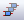

Cheat Sheet for ¶
- Start Schematics PADS DX Designer
- Start PCB PADS Layout
- Common Icons
- Schematics
- Layout
 Router
Router- Constraint Manager
 Library Tools
Library Tools
Schematics¶
New Project¶
in ‘Start Page’ tab, select in ‘New Project’ pane > PADS Integrated > PADS ODA
Add a new Sheet¶
pg down on a active sheet
Change page size¶
- Unselect all
- In Properties, change Drawing size and orientation
- In page,
RClick> Change border… to select a proper border
Show Parts Panel¶
View > PADS Databook
Disable PADS Databook Database¶
Setup > Settings > Licensing, uncheck ‘PADS Databook database support’
Parts¶
Add a part¶
- Choose symbol from PADS Databook
- drag and drop it into the page
With Nets¶
Check ‘Add Nets’
With names in Nets¶
Also Check ‘Add Net Names’
Add Ground, VDD, links, etc¶
Add > Special Components or View > My Parts, then ‘Special Components’ tab.
Hint
- Same part may have multiple symbols!
- If you put a part over a net, it will be automatically splitted!
Manipulation¶
Rotate¶
F3 or pick handle 
Mirror Horizontally¶
F4 or 
Flip Vertically¶
F5 or
Array¶
- Select components
- 
- Set rows and column
- Set spacing
Duplicate¶
- Select part; then
Ctrl+C,Ctrl+V, or - Select part, then
Ctrl+LClickand dragLClick
Nets¶
Add a net¶
nor
LClickin start- Draw and
LClickon end
Add Multiple¶

drag LClickto select starting pinsdrag LClickto destination pinsRClick
Add nets to pins¶
- n or
Alt+LClickon pin
Bus¶
Add¶
bor
LClickto drawESC- In Properties > Name, set NET_NAME[n:0]
Rip nets from bus¶
- RClick on Bus > Rip Nets
- Select nets (
Ctrl= multi) LClick
Connect a symbol to the bus¶
- Touch bus with symbol pins
- Select the bus indexes to connect and order
- put symbol away from the bus to draw nets
Links¶
Setup¶
- View > My Parts, to show panel
- Setup > Settings
- In Cross Probing, Check ‘Zoom Fit to Selected objects’
- In Advanced, check ‘Automatically synchronize Links and net names’
- Click OK
Add¶
- In My Parts > Special Components > Link
- Connect link to net
- In properties, set a name for the link
- Add another Link with the same net
Blocks¶
Create a block for an existing circuit¶
- Prepare circuit to extend ports nets

- Create a box crossing the ports nets with the border
- Set block name
LClickin blockLClickin (extract schematic)
(extract schematic)
Edit a block¶
In Project > Blocks, double LClick on the block
Edit a block directly from schematic¶
On block RClick > Push
Selection Filter¶
 then select the elements to enable by selection
then select the elements to enable by selection
Add custom filters¶
Choose ‘settings…’ in combobox
Create a PCB from schematics¶
- or Tools > PADS Layout
- Select template (System Default start-up file is OK)
PCB¶
Begin¶
1. Sync to Schematics¶
Setup > Project Integration, click in amber lights
2. Set Board Outline and cutouts¶
 >
>  and draw
and draw
3. Set Layers¶
Setup > Layer Definition
Outline and keepouts¶
Edit outline¶
- Clear selection
RClick> Select Board Outline- Pick outline trace and move
Add keepout¶
> and draw, then set parameters
Layers¶
Set Layers¶
Setup > Layer Definition
Change layers number¶
- Click Modify
- Set new number
- Check reassignment
Visibility¶
Nets Colors¶
Ctrl+Alt+N- Select net or class
- Click ‘Add’
- Set color and what to show
- Check ‘color traces by net’ to show trace with the same color
Parts Placement¶
Disperse¶
Tools > Disperse Components
Move components¶
- Pick part
Ctrl+EorLClick and drag
Rotate¶
Ctrl+R or tab
Change layer¶
Rclick > Flip Side or Ctrl+F
Hint
- It’s easier to pick components from Schematics using cross-probing (use filters to select only symbols)
- You can create a cluster of clusters!
Cluster components¶
RCLick> Select Components- Select parts
RClick> Create Cluster
Select clusters¶
RClick > Select clusters
Place parts from a cluster¶
LClickto Select ClusterRClick> Break- Place parts
Copper¶
Add¶
 for solid copper or
for solid copper or  for copper pour or for plane shape only in mixed plane layers
for copper pour or for plane shape only in mixed plane layers- Draw shape
Add cutout¶
 for solid copper or
for solid copper or
 for copper pour or
for plane shape only in mixed plane layers
for copper pour or
for plane shape only in mixed plane layers
Edit¶
- Clear selection
- RClick > Select Board Outline
- Pick polygon trace and edit
Tip
RCLick for polygon options
Routing¶
Setup Dynamic Route and Bus Route¶
- Tools > Options > Design
- Set On-line DRC to Prevent
Start route¶
LClickover pin or traceF3
Confirm a segment¶
LClick or space
Undo a segment¶
Backspace
Change Layer¶
F4 or l<n>
Autocomplete¶
Double LClick
Stop Routing¶
Ctrl+LClick
Change Width¶
w<width>
Add a via¶
Shift+LClick
Add testpoint¶
While routing RClick > Add testpoint
Add jumper¶
- While routing
RClick> Add jumper - Select orentation and length
Via at SMD¶
In Layout ()
RClick> Select Traces/PinsLClickon padRClick> Add Via at SMD
Hint
To enable via at SMD, via to pad distance for the same net should be zero.
Bus Route¶
- Rclick > Select Pins/Vias/Tacks
- Select pins to be routed together
- RClick > Bus Route
Hint
If one of the traces in cannot be routed, it will ask you to route it separately.
Cross-probing¶
It works for integrated projects.
Setup¶
On Schematics¶
- Setup > Settings
- At Cross Probing section, Check all checkboxes. Click OK.
- Setup > Cross Probing needs to be checked.
On Layout and Router ¶
- Tools > Options
- In Cross Probing Tab, Check ‘Enable’
- Choose Action.
Hint
Pan is good for placing/routing
Using¶
Select in Schematics, work in Layout/Router¶
- Arrange Schematics and Layout/Router windows in splitted screen or different displays
- In Layout/Router,
RClickand choose the selection type - In Schematics, select the components
- Go to Layout/Router, in a region without elements to select press
Ctrl+LClick, to avoid losing the selection - Perform the selected operation
Select in Layout/Router, work in Schematics¶
- In Layout/Router, select the elements
- In Schematics, in a region without elements to select press
Ctrl+LClick, to avoid losing the selection - Perform the selected operation.
Vias¶
Note
- Pad stack The via shape in the layers
- Via Span The default via used to pass from one layer to another
- Through Via via crossing all layers
- Partial Via Via crossing a only some layers (blind and buried vias)
Setup¶
Set via Pad Stacks¶
- In Layout () Setup > Pad Stacks
- Set Pad Stack type to Via
- Select Via and change properties
Add a via padstack¶
- In Pad Stacks dialog, set Via type and Click in ‘Add Via’.
- Select through or partial
- Set start an end layer for partial vias
- Set pad styles for Pad and thermal
Set default vias¶
- In Layout () Setup > Via Spans
- Set Default via for the given according to vias types and layers
Set vias per Layer/Class¶
In Constraint manager () > Net Classes, set Via Assignments (same dialog as Via Spans)
Stitching vias¶
Setup¶
- In Layout () Tools > Options, Via Patterns page
- Choose GND at ‘Add vias from net’ option.
- Choose Via type
- For shapes, select Net and Via type if required
Add Stitching vias around nets¶
RClick> Select Nets- Choose nets
RClick> Add Via Shield- ESC
RClick> Select Pins/Vias/Tacks- Move/remove the unwanted vias
Fill a shape with stitching vias¶
- Choose a ‘solid copper’ shape ( > )
RClick> Select Shapes- Select shape
RClick> Via Stitch
Diff Pairs¶
Separation and Spacing
Via types
Setup¶
Set Diff Pair in schematics¶
- Select net
- In Properties, set the pair net in ‘diff pair’ field
Set diff pair in constraint manager:¶
Edit > Differential Pairs > Auto Assign Differential Pairs…
Set patterns for Net name and Pair net Name
Click Apply
Hint
Nets set in schematics won’t appear in auto assign dialog
Set Diff Pair Spacing¶
- At Net Classes select class
- Change Differential Spacing
Set Max Separation¶
- At Constraint Classes select the class
- Select ‘Nets’ tab
- Select class or net
- Set Separation Distance
Set diff pair length¶
In constraint manager ()
- Click in constraint classes
- Select diffpair
- Set Min and max length.
Routing¶
Route Diff pairs¶
In Router () Same as route a single trace
Change leader routing trace¶
tab
Split traces¶
Ctrl+X
Route separately/join¶
Ctrl+Z
Tune diff pairs¶
- In router ()
RClick> Select nets- Click on one net of diff pair
RClick> Select Differential pairsRClick> Tune
Tune diff pair Options¶
In Router () Tools > Options > Routing Page > Tune
Parts¶
Hint
Use Library Tools
New Part¶
- Add symbol
- Add decal
- Add part and map symbols and decals
Calling from Schematics¶
Tools > PADS Library Tools
Calling from Layout¶
File > PADS Library Tools
Add a Symbol (box type)¶
- Select symbols section and partition.
- Over Partition
RClick> New Symbol or Symbol Wizard - Choose Module and Fracture for big pin counts parts. Fill rows.
Tip
You can copy/paste from Excel!
Add a Decal¶
- Select decals section and partition
- Over Partition
RClick> New Decal… - If possible, use Decal Wizard
Use Decal Wizard¶
- >

- At bottom, select units
- Choose type (dual, quad, polar, BGA/PGA)
- Fill data, click OK.
Add a Part¶
- Select ‘Parts’ section and partition
- Select Logic Family (UND by default)
- In PCB Decals assign Decals
- In Gates, Click ‘Add’ and choose symbol in ‘CAE Decal 1’, ‘CAE Decal 2’, etc
- Make a copy of C:PADS ProjectsSamplesPart_Pins_Template.csv and complete the info for Pins Tab.
- In ‘Pins’ tab, click on Import CSV and import the completed CSV
- Click ‘Check Part’ and fix issues before click OK
Part with fractures¶
In Gates Tab, add multiple Gates with Swap 0
Part with multiple symbol representations¶
Add CAE Decal 1, CAE Decal 2, etc.
Part with duplicate symbols (E.g., a quad nand IC)¶
Add many gates with the same swap number, but different to 0
Add data into databook¶
- Choose partition at Parts section
RClick> Edit parametric data
Note
- Pins Tab Information:
- Pin Group Gate A, Gate B, Unused pin or Signal
- Number Decal number
- Name Symbol name
- Type Source, Bidirectional, etc
- Swap Gates Swap groups
- Seq Symbol pin name
Constraints¶
Hint
Use Constraint Manager
Definitions¶
Net Classes¶
To set Via assignments, layers where to route, trace widths and diff pair spacing. Applicable to nets.
Clearances¶
To set general clearances (via to via, via to pad, etc). Just use the (Default Rule), except if custom clearances between Net classes is required (for example, distance between two buses).
Constraint classes¶
To set stub lengths, topology, net lengths, max number of vias, and diff pair separation distance
PartQuest  ¶
¶
Register¶
- Go to http://partquest.com
- At top-right, click on ‘Create Account’. It will redirect to mentor.com site.
- Fill the form and click on ‘Create Account’
- Once registered, log in
- At top-right, click on your name, then click on ‘My Profile’
- Check Desktop Integration. Select ‘Direct Download’
- In Default flow, select ‘PADS Integrated’
Download parts¶
Download one part¶
- Open PADS Maker Schematic and load a project
- At checkboxes, check “Symbol/Footprint”
- At search box, enter the name of the part
- (Recommended) also check RoHS Complaint and Lead Free
- Click on ‘More’ at the part from results
- Check that no warnings appear
- Click on Download. Select Partition if required.
- Once the file is downloaded, double click on it.
- On PADS Maker Schematics, the part will be immediately included into the library at PartQuestDirect partition.
Hint
You can use filters to reduce the search results
Download multiple parts¶
- Follow the same steps than before, except instead click on ‘Download’ click on ‘Add to Project’. Select the project or create a new one.
- When all parts are selected, at left pane click on ‘My Projects’ and select the project
- Click on every row to download or in ‘Select All’
- Click on ‘Download’ above the table headers.
- Double click on the .pqz file to add the new parts into the library.